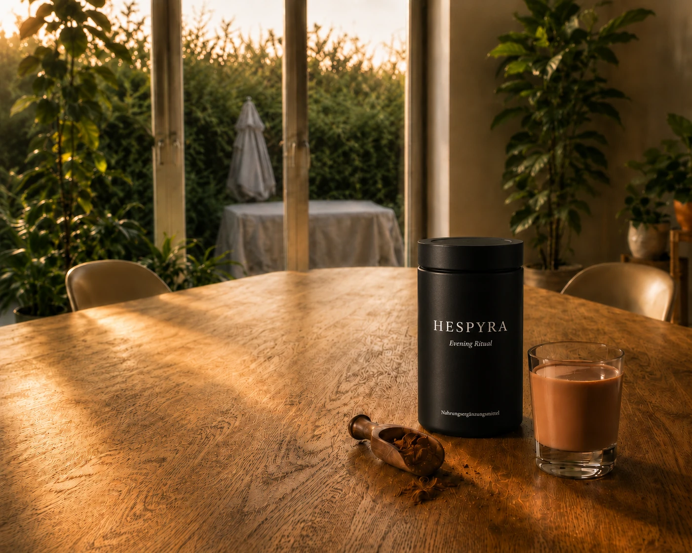
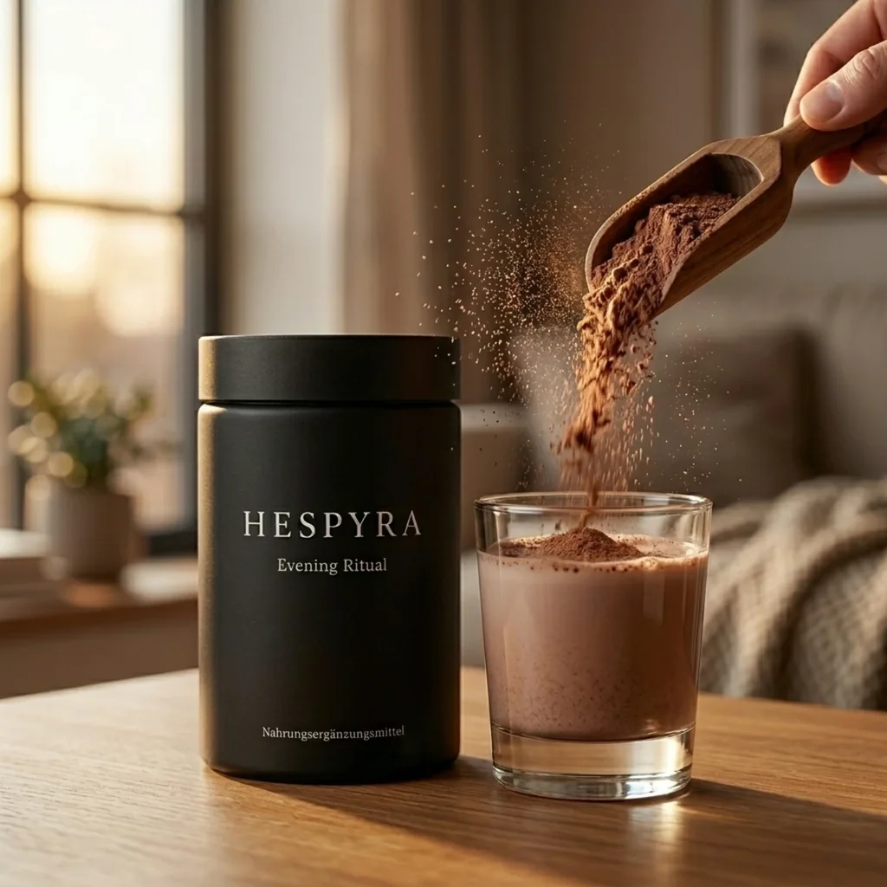
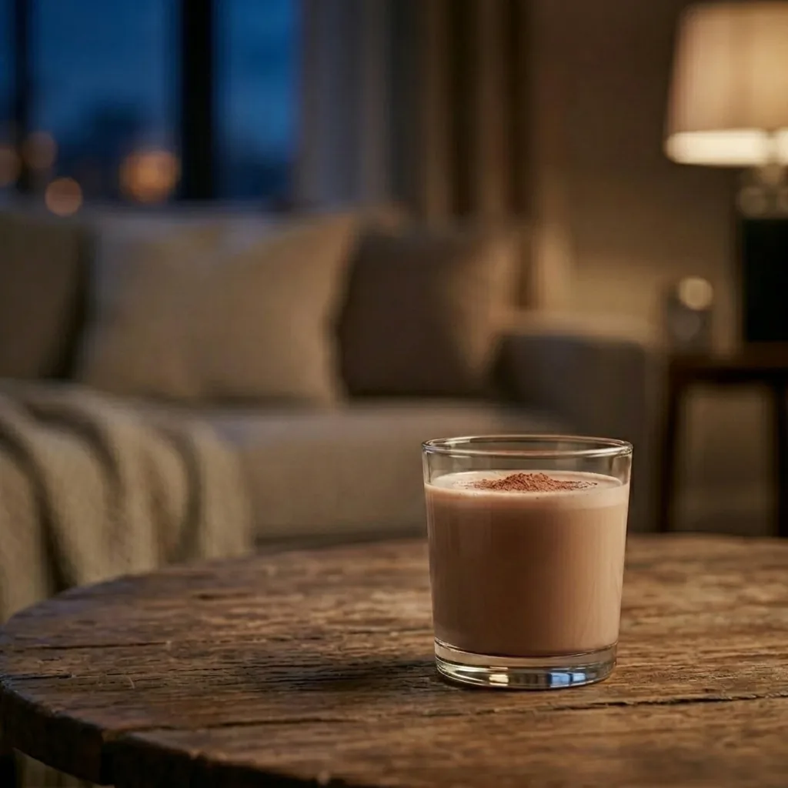

Kakao-Abenddrink zum Anrühren
Für den Moment, der dir gehört.
Mit Magnesium und sorgfältig ausgewählten Pflanzenstoffen.
- Kakao& Vanille
- 30Portionen
- GenießbarWarm oder kalt
- AlsPulverdrink

Der Moment davor
Der Abend beginnt. Ein Glas gibt ihm eine Form.
Zwischen letzter Aufgabe und eigenem Abend liegt ein kleiner Moment. Nicht groß. Nicht laut. Aber spürbar.
HESPYRA gibt diesem Anfang eine Form: angerührt, gehalten, langsam getrunken.

Das Ritual
Ein Glas, das den Übergang markiert.
Lösen
Ein Löffel HESPYRA in Wasser oder Pflanzenmilch — langsam verrührt. Eine Geste, die den Abend eröffnet.
Sammeln
Das Glas in den Händen, Kakao und Vanille im Aroma — einen Moment gehalten, bevor der erste Schluck kommt.
Ankommen
Langsam getrunken, beginnt der Abend — wiederholt, Tag für Tag, auf dieselbe ruhige Weise.
Die Komposition
Eine Komposition für den Abend.
Was in HESPYRA steckt, wird offen benannt: ausgewählte Rohstoffe, nachvollziehbare Komposition, keine proprietären Mischungen.
- SafranAus Spanien, in Affron®-Qualität.
- AshwagandhaWurzelextrakt, KSM-66®.
- ReishiGanoderma lucidum.
- L-TheaninSuntheanine®.
- PhosphatidylserinSerinAid®.
- MagnesiumBisglycinat & Taurat.
- Kakao
- Vanille
Ausgewählte Marken-Rohstoffe, transparent offengelegt. Keine proprietären Mischungen. Keine versteckten Füllstoffe.
Ein anderes Glas
Nicht jeder Abend braucht mehr Ablenkung.
Nicht jeder Abend braucht noch ein Glas Wein.
Nicht jeder Abend muss im Scrollen verschwinden.
Manchmal genügt ein anderes Glas: warm, bewusst, wiederholbar.
HESPYRA ist kein Verzicht. Es ist ein anderer Anfang.

Entwickelt mit Sorgfalt
Das Gegenteil einer schnellen Lösung.
HESPYRA entsteht aus der Überzeugung, dass ein Abendritual nicht laut auftreten muss — entwickelt mit Sorgfalt, als tägliche Geste, nicht als lautes Versprechen.
Entwickelt aus Gesprächen mit Menschen, die dem Abend wieder mehr Aufmerksamkeit geben möchten.
Profound Formulas
Hinter der Rezeptur steht Christian Baker, Gründer von Profound Formulas. In über sechzehn Jahren hat er Rezepturen für internationale Marken entwickelt — und bringt dieselbe Sorgfalt in ein Produkt ein, das bewusst leise bleibt.
Fragen
Was sich zu wissen lohnt, bevor der Abend beginnt.
Erste Edition
Die erste Edition von HESPYRA entsteht.
Für Menschen, die dem Abend wieder einen Anfang geben möchten. Begleite den Anfang — mit Einblicken in Entwicklung, Geschmack und Launch.
Der Anfang eines Abends, der wieder dir gehört.